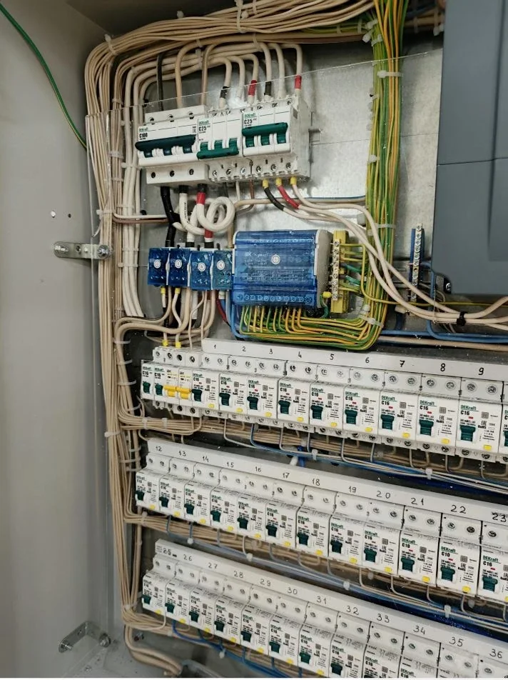

Квартирный щит
Ошибки при сборке квартирного щита
Квартирный щит должен быть понятным, обслуживаемым и рассчитанным под реальные нагрузки. Частая ошибка - собрать “лишь бы работало”, без нормального разделения линий и запаса на эксплуатацию.

Ошибка 1. Слишком мало групп
Если объединить слишком много потребителей в одну группу, при проблеме отключается большая часть квартиры. Отдельные линии нужны для кухни, санузла, мощной техники, освещения и розеточных групп.
Ошибка 2. Нет понятной маркировки
Щит без подписей сложно обслуживать. Через год после ремонта уже непонятно, какой автомат за что отвечает. Нормальная маркировка экономит время при проверке и ремонте.
Ошибка 3. Не учтена будущая техника
На этапе ремонта легко забыть про кондиционер, теплый пол, рабочее место, посудомоечную машину или бойлер. Потом приходится переделывать отделку или использовать неудобные решения.
Ошибка 4. Нет запаса места
Щит, заполненный полностью с первого дня, неудобен для обслуживания и доработок. Лучше заранее предусмотреть разумный запас под будущие линии или замену оборудования.
Ошибка 5. Защиту выбирают без учета кабеля и нагрузки
Номинал автомата нельзя выбирать только по мощности прибора или по принципу «чтобы не выбивало». Аппарат должен защищать линию с учетом сечения кабеля, способа прокладки и характера нагрузки. Завышенный номинал может не отключить линию вовремя при перегрузке.
Ошибка 6. Все линии подключают под одно устройство защитного отключения
Когда большое количество групп зависит от одного устройства, единичная неисправность может оставить без питания всю квартиру. Разделение защиты по функциональным зонам упрощает поиск проблемы и позволяет сохранить работу исправных линий.
Ошибка 7. Нулевые проводники разных групп смешивают
После разделения линий по устройствам защиты их рабочие нулевые проводники должны подключаться по согласованной схеме. Смешение приводит к ложным срабатываниям и усложняет диагностику. В готовом щите должно быть понятно, к какой группе относится каждый проводник.
Ошибка 8. Не остается схемы и перечня линий
Одних надписей на дверце недостаточно. Полезно сохранить перечень аппаратов, назначение линий и однолинейную схему в актуальном состоянии. Эти данные нужны при подключении новой техники, поиске неисправности или передаче квартиры другому владельцу.
Как принять квартирный щит после сборки
- Сверить подписи аппаратов с розетками, освещением и отдельными потребителями.
- Проверить, что корпус закрывается без давления на проводники и внутри есть доступ для обслуживания.
- Убедиться, что мощные потребители и влажные зоны учтены отдельными линиями и защитой по проектному решению.
- Получить схему или понятный перечень групп, а также зафиксировать установленную автоматику.
- Попросить исполнителя показать логику отключения и проверить работу устройств защиты штатными средствами.
Самостоятельно подтягивать соединения или менять номиналы аппаратов в работающем щите не стоит. Если есть сомнения в сборке, безопаснее выполнить проверку до закрытия отделки и подключения всей техники.
Связанные материалы: какие линии выделять отдельно, стоимость электромонтажа квартиры и электрика в квартире под ключ.
Нужно продумать квартирный щит?
Пришлите план квартиры и список техники. Подскажем, какие группы стоит предусмотреть до начала монтажа.
Оставить заявку